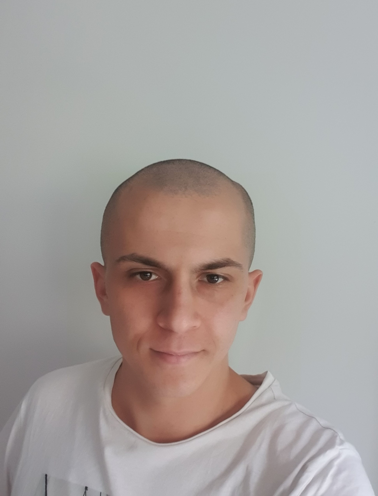

Téléphone: 07/50/31/76/27
Mail: malik.aouane@le-campus-numerique.fr
Adresse postale: 7 rue honore de balzac

Après avoir obtenu mon diplôme d'aide soignant je souhaite
faire une reconversion professionnelle dans le secteur de
l'informatique et plus exactement en tant que développeur
web.
Je suis passionné par tout ce qui touche au numérique.
Je suis une personne curieuse, patiente, organisée et
autonome.
| 07/2019 à 08/2019 | EVD AGENT D'ENTRETIEN DES ESPACES VERT |
| 07/2016 à 07/2016 | DOMINO MANUTENTION |